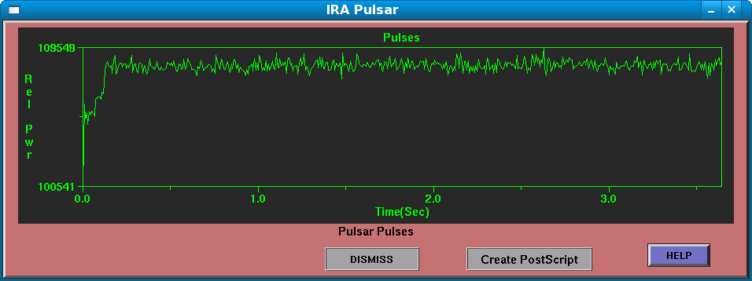

The IRA Pulsar Window
This window shows pulsar pulses, using the conventional synchronous folding technique to improve post-detection SNR of pulsars. The X axis shows time, in seconds, while the Y axis shows absolute values from the detector.

The Create PostScript Control
This button allows you to create a PostScript of the pulsar plot. It will cause a file browser to pop-up, allowing you to select the directory and filename for the resulting PostScript file.
DISMISS
This control causes the IRA Pulsar Window to close, but pulsar data are updated, even when the window is closed.